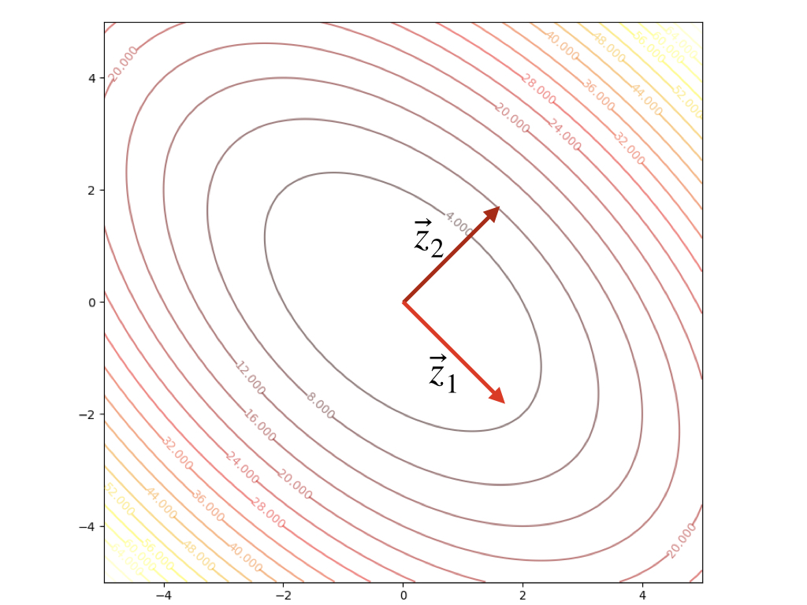

Keywords: quadratic functions
Quadratic Functions
Quadratic function, a type of performance index, is universal. One of its key properties is that it can be represented in a second-order Taylor series precisely.
F(x)=21xTAx+dx+c(1)
where A is a symmetric matrix(if it is not symmetric, it can be easily converted into symmetric).
And recall the property of gradient:
∇(hTx)=∇(xTh)=h(2)
and
∇(xTQx)=Qx+QTx=2Qx(3)
then the first-order of quadratic functions is:
∇F(x)=Ax+d(4)
and second-order of quadratic functions is:
∇2F(x)=A(5)
More than second-order derivatives are 0.
The shape of quadratic functions can be described by eigenvalues and eigenvectors of its Hessian matrix. Hessian matrix is a symmetric matrix and its eigenvectors are mutually orthogonal, let:
z1,z2,⋯,zn(6)
denote the whole set of the eigenvectors of the Hessian matrix A and we build a matrix:
B=[z1z2⋯zn](7)
and then we have BBT=I then B−1=BT. When Hessian matrix is positive definite, it would have n eigenvectors(Hessian has a full rank n) and we can change Hessian matrix into a new matrix whose basises are the set of eigenvectors:
A′=BTAB=⎣⎢⎢⎡λ1λ2⋱λn⎦⎥⎥⎤=Λ(8)
after changing the basis, the new Hessian matrix is a diagonal matrix whose elements on the diagonal are the eigenvalues. This process can be inversed because of BBT=I:
A=BA′BT=BΛBT(9)
We can calculate the derivative towards any directions:
∣∣p∣∣2pT∇2F(x)p=∣∣p∣∣2pTAp(10)
For columns of B can span the whole space, So we can find a vector c satisfy:
p=Bc(11)
then take equation(8), equation(11) into equation(10) we get:
cTBTBccTBTABc=cTIccTΛc=∑i=1nci2∑i=1nλici2(12)
From equation(12), we could conclude:
λmin≤∣∣p∣∣2pTAp≤λmax(13)
- maximum 2nd derivative occure along with zmax(according to λmax)
- eigenvalues is the 2nd derivative along its eigenvector.
- eigenvectors could define a new coordinate system
- eigenvectors are principal axes of the function contour.
- going along with the zmax direction could have the largest change in function value ∣ΔF(x)∣
- eigenvalues here are all positive because of positive definite.
An example:
F(x)=x12+x1x2+x22=21xT[2112]x(14)
we can calculate the eigenvectors and eigenvalues:
λ1=1λ2=3z1=[1−1]z2=[11](15)
The contour plot and 3-D plots is:


Another example:
F(x)=−41x12−23x1x2−41x22=21xT[−0.5−1.5−1.5−0.5]x(16)
we can calculate the eigenvectors and eigenvalues:
λ1=1λ2=−2z1=[−11]z2=[−1−1](17)
The contour plot and 3-D plots is:

Conclusion
- λi>0 or i=1,2,⋯, F(x) have a single strong minimum
- λi<0 or i=1,2,⋯, F(x) have a single strong maximum
- λi have both negative and positive together. F(x) has a saddle point
- λi≥0 and have a λj=0, F(x) has a weak minimum or has no stationary point.
- λi≤0 and have a λj=0, F(x) has a weak maximum or has no stationary point.
References